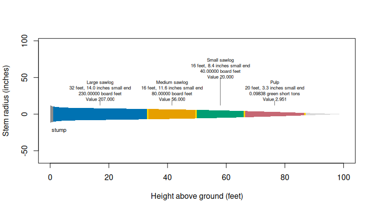

merchandiser estimates logs, product volumes, and value from tree measurements and explicit product specifications. It supports foresters working with tree lists in R, with results that retain tree identifiers for summaries by species, stand, or product.
Specify log dimensions, diameter limits, scaling rules, and prices, then select logs by product priority or maximize their total value. Located defects change the available stem sections and eligible products. Results include selected logs, residual sections, status, and recorded assumptions.
The package also fits and completes tree heights, fits taper equations, measures stem sections, and estimates dry biomass and carbon in metric tonnes from diameters in inches and heights in feet. The shipped source equations come from the Forest Service National Volume Estimator Library, as recorded in DESCRIPTION.
Tasks
| Task | Functions |
|---|---|
| Define products and select logs |
product(), products(), merchandise()
|
| Record located defects |
defect(), defects_from_stoppers(), validate_defects()
|
| Fit and complete tree heights |
fit_height(), complete_heights(), predict_height()
|
| Measure a stem or section |
stem_profile(), dib(), dob(), stem_volume()
|
| Estimate biomass and carbon |
biomass(), carbon_fraction()
|
| Fit and register a taper equation |
fit_taper(), as_taper_model(), register_taper_model()
|
| Review calculation conditions |
status_codes(), assumptions()
|
biomass() returns metric tonnes, while green_weight() converts stem volume to short tons for product scaling.
Get started
merchandise() selects and scales logs from tree measurements and product specifications. Product order sets cutting priority under the default strategy. Prices assign value to the selected logs without changing that priority.
Tree 5 is a synthetic example with species code 202, diameter at breast height of 20 inches, and total height of 100 feet. Its stored equation is passed explicitly below. Dimensions use inches and feet. Prices are illustrative United States dollars.
## Attach the calculation and data tools
library(merchandiser)
library(dplyr)| tree_id | species code | diameter (inches) | height (feet) |
|---|---|---|---|
| 5 | 202 | 20 | 100 |
The 20-inch diameter and 100-foot height supply the tree measurements for the log calculation.
## Give long logs with the largest small end limit first priority
large <- product(product = 'Large sawlog', ## product label
min_length = 32, ## feet
max_length = 32, ## feet
min_sed = 12, ## inches
inside_bark = TRUE, ## limits measured inside bark
trim = 0.5, ## feet
volume_unit = 'scribner', ## board feet
price = 900, ## dollars
price_per = 1000) ## board feet
## Accept shorter logs that meet the medium sawlog diameter limit
medium <- product(product = 'Medium sawlog', ## product label
min_length = 16, ## feet
max_length = 16, ## feet
min_sed = 10, ## inches
inside_bark = TRUE, ## limits measured inside bark
trim = 0.5, ## feet
volume_unit = 'scribner', ## board feet
price = 700, ## dollars
price_per = 1000) ## board feet
## Accept smaller sawlogs before assigning wood to pulp
small <- product(product = 'Small sawlog', ## product label
min_length = 16, ## feet
max_length = 16, ## feet
min_sed = 6, ## inches
inside_bark = TRUE, ## limits measured inside bark
trim = 0.5, ## feet
volume_unit = 'scribner', ## board feet
price = 500, ## dollars
price_per = 1000) ## board feet
## Assign remaining eligible sections to pulp by green weight
pulp <- product(product = 'Pulp', ## product label
min_length = 8, ## feet
max_length = 20, ## feet
min_sed = 3, ## inches
inside_bark = TRUE, ## limits measured inside bark
trim = 0.5, ## feet
volume_unit = 'green_ton', ## green short tons
price = 30, ## dollars
price_per = 1) ## green short tonsEach cut occupies the nominal log length plus trim. Scale uses the nominal length, and trim remains in the residual record.
## Offer the stem to sawlog products before pulp
specifications <- products(large, medium, small, pulp)
## Select and price logs using the tree's stored taper equation
result <- merchandise(tree_id = tree$tree_id,
dbh = tree$dbh,
ht = tree$ht,
spcd = tree$spcd,
products = specifications,
model = tree$model)| product | start (feet) | end including trim (feet) | nominal length (feet) | small-end diameter (inches) | scale (Scribner board feet) | scale (green short tons) | value (dollars) |
|---|---|---|---|---|---|---|---|
| Large sawlog | 1.0 | 33.5 | 32 | 14.017 | 230 | NA | 207.000 |
| Medium sawlog | 33.5 | 50.0 | 16 | 11.643 | 80 | NA | 56.000 |
| Small sawlog | 50.0 | 66.5 | 16 | 8.413 | 40 | NA | 20.000 |
| Pulp | 66.5 | 87.0 | 20 | 3.341 | NA | 0.098 | 2.951 |
The large sawlog contributes 207 dollars at the specified price of 900 dollars per 1000 board feet.
| scale (Scribner board feet) | price (dollars) | price basis (board feet) | calculated value (dollars) |
|---|---|---|---|
| 230 | 900 | 1000 | 207 |
Its 230 board feet supply the scale used in that value calculation.
## Draw the selected logs and unassigned stem sections
plot(result)
The drawing places the large sawlog at the base, starting above the 1 foot stump.
Biomass and carbon
## Estimate dry biomass and carbon for the same tree
mass <- biomass(dbh = tree$dbh,
ht = tree$ht,
spcd = tree$spcd)| dry mass excluding foliage (tonnes) | carbon (tonnes) | carbon dioxide equivalent (tonnes) |
|---|---|---|
| 1.302 | 0.672 | 2.463 |
The tree contains 1.302 metric tonnes of dry aboveground biomass excluding foliage.